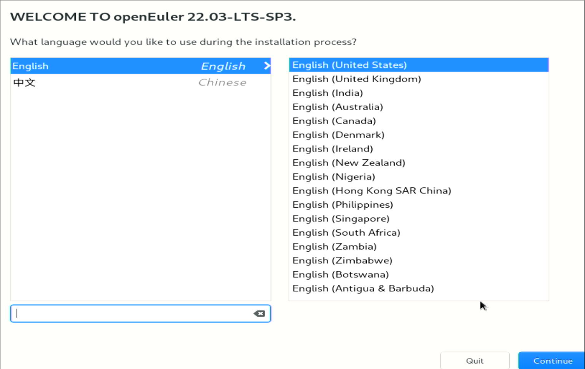

20250305
1. docker related
Build kbox steps:
cd /home/
cd auto_compile/
apt update -y
apt install -y vim
apt install -y build-essential openssh-client
apt install -y wget
wget https://mirrors.huaweicloud.com/kunpeng/archive/kunpeng_solution/ARMNative/BoostKit24.0.0_Demo/Kbox_Demo/Kbox-AOSP11.zip
apt install -y unzip sudo
unzip Kbox-AOSP11.zip
cd Kbox-AOSP11
cd /home/auto_compile/Kbox-AOSP11/make_img_sample/kbox11_android_build
vim kbox11_android_build.sh
DNS=223.5.5.5
cd /home/auto_compile/Kbox-AOSP11/make_img_sample/kbox11_android_build
mkdir -p package
# ls /root/kbox/
BoostKit-kbox_6.0.0_11.zip Kbox-AOSP11.zip libva-2.14.0.tar.gz mesa-22.1.7.tar.xz patchForExagear.zip
ExaGear_ARM32-ARM64_V2.5.tar.gz drm-libdrm-2.4.111.zip llvm-13.0.1.src.tar.xz meson-0.63.2.tar.gz vmi-CloudPhone.zip
get the source code of aosp:
export REPO_URL='https://mirrors.bfsu.edu.cn/git/git-repo'
sudo curl https://mirrors.bfsu.edu.cn/git/git-repo -o /usr/local/bin/repo
sudo chmod 777 /usr/local/bin/repo
git config --global user.email "ddd@hhh.com"
git config --global user.name "ddd"
repo init --depth 1 -u https://mirrors.bfsu.edu.cn/git/AOSP/platform/manifest -b android-11.0.0_r48
repo sync -j12
2. openeuler 22.03-sp3


reformat:


create user:

After installation:

# vi /etc/default/grub
cgroup_enable=memory swapaccount=1
# grub2-mkconfig -o /boot/efi/EFI/openEuler/grub.cfg
# vi /etc/selinux/config
disabled
# echo "fs.inotify.max_user_instances=8192" >> /etc/sysctl.conf
# sudo sed -e 's|http://repo.openeuler.org/|https://mirrors.ustc.edu.cn/openeuler/|g' \
-e 's|https://mirrors.openeuler.org/|https://mirrors.ustc.edu.cn/openeuler/|g' \
-i.bak \
/etc/yum.repos.d/openEuler.repo
# yum install -y make dpkg dpkg-devel openssl openssl-devel ncurses ncurses-devel bison flex bc libdrm build elfutils-libelf-devel patch gcc
Kernel should downloaded from:
https://gitee.com/openeuler/kernel/repository/archive/5.10.0-182.0.0.zip